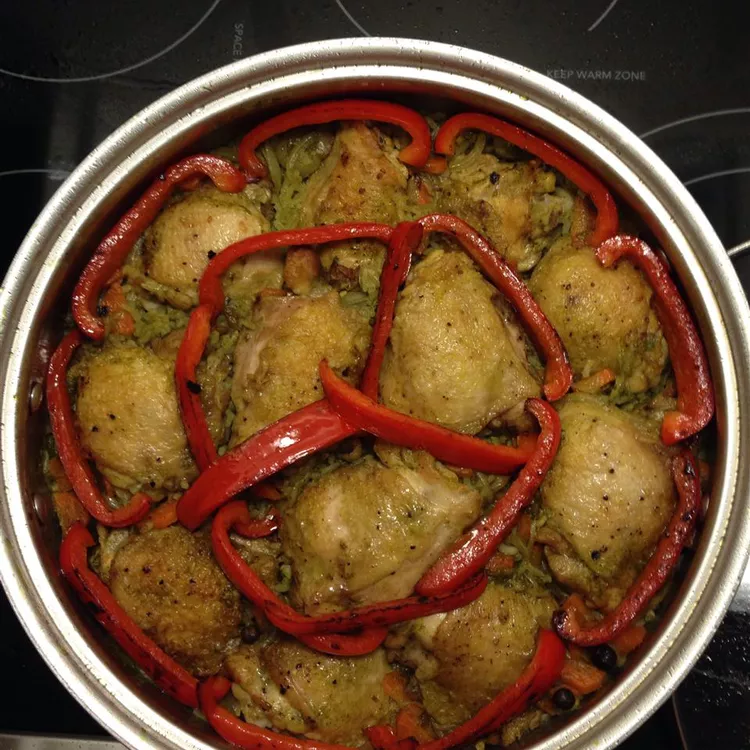

Arroz con Pollo Peruano (Peruvian Rice with Chicken)

Description
This Peruvian Green Arroz Con Pollo (arroz con pollo Peruano receta) is how Peruvians make
arroz con pollo! The broth that everything cooks in is infused with cilantro, onion, and Peruvian aji making it
a beautiful, vibrant green. A true staple of the Peruvian cuisine!
Ingredients
- 4 tablespoons vegetable oil
- 6 chicken drumsticks with skin, patted dry
- salt and black pepper to taste
- 1 ½ bunches fresh cilantro, leaves picked from stems
- 6 cloves garlic, peeled and coarsely chopped
- 1 Peruvian aji pepper, seeded and deveined
- 1 tablespoon Worcestershire sauce
- ½ cup orange juice
- 2 cups uncooked white rice
- 2 onions, chopped
- ½ cup white wine
- 3 ½ cups chicken broth
- 1 teaspoon freshly ground black pepper
- 1 large carrot, peeled and diced
- 1 bell pepper, any color, sliced into rings
- ¾ cup frozen peas
Steps
-
Place two large skillets over medium heat; pour 2 tablespoons oil into each skillet and heat until oil
ripples. Season chicken thighs and drumsticks with salt and pepper. Divide chicken between the two
skillets and fry until golden brown and crisp, about 15 minutes. Use screens over the skillets to
control spattering if needed. Drain chicken on paper towels.
-
Blend cilantro leaves, garlic, aji pepper, Worcestershire sauce, and orange juice in a blender until
smooth. Pour mixture into one of the skillets; Bring to a simmer, then cook and stir over medium-low
heat until the mixture turns from bright to dark green, about 5 minutes.
-
Place chopped onions into the other skillet over medium-low heat; cook and stir until translucent, 5 to 7
minutes. Add rice; cook and stir until it starts to turn opaque, about 5 minutes.
-
Pour wine into the blender and pulse a few times to rinse off any extra cilantro mixture from the sides;
pour wine into the skillet containing the cilantro mixture. Bring back to a simmer over medium heat. Scrape
the rice and onions into the cilantro mixture, then stir in the chicken broth and black pepper and bring to
a boil. Place browned chicken pieces and carrots into the skillet, stir to combine, and cover. Reduce the heat
and cook until the rice is separate and the chicken is no longer pink in the center, about 30 minutes.
-
Remove the lid, place the pepper rings on the rice, and sprinkle with frozen peas. Cover and cook, without
stirring, until peppers and peas are tender, about 15 minutes. Uncover and allow the dish to rest for 5
minutes before serving.